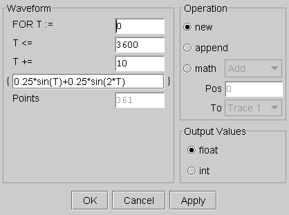
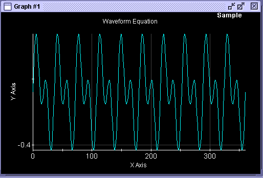

Waveform Equation
This menu item accesses the Waveform Equation editor. To create arbitrary waveforms that are not available using the Waveform Editor, you can specify an equation that describes the required waveform using this editor.
The Waveform Equation window shown below includes an equation field where you can enter an equation containing a single variable that describes the required waveform.
The following figure shows an example of specifying a two-tone signal using the Signal Analyzer.

The limits in which to sweep the variable are entered into the fields:
- T : = starting from
- T < = running through
- T + = in steps of.
The number of points is automatically calculated.
The following figure shows the waveform generated from the above function.

You can generate many more waveforms than sine. The Signal Analyzer can interpret a variety of mathematical functions.
The following tables list the math functions the Signal Analyzer can interpret. Before you specify one of these functions or a combination of functions, you need to be familiar with that function. You must restrict your argument range in order to ensure:
- The function is defined for all x-values.
- The function does not strive for infinity.
- The combined function does not divide by zero.
Functions that do not match these criteria will not be executed. However, if you follow the rules, these functions provide a comprehensive toolset for creating mathematical and arbitrary waveforms.
General functions
a + b |
abs (x) |
a - b |
signof (x) |
a * b |
ordinal (x) |
a / b |
round (x) |
a mod b |
floor (x) |
a div b |
ceil (x) |
|
intPart (x) |
|
fractPart (x) |
Logarithmic functions
sq (x) |
log (x) |
sqrt (x) |
log10 (x) |
cubert (x) |
exp (x) |
recip (x) |
exp10 (x) |
Ramps
ramp (numElem, from, thru) |
xramp (numElem, from, thru) |
logRamp (numElem, from, thru) |
xlogRamp (numElem, from, thru) |
Trigonometric functions (in degrees)
sin (x) |
asin (x) |
cos (x) |
acos (x) |
tan (x) |
atan (x) |
cot (x) |
acot (x) |
|
atan2 (y, x) |
Hyperbolic functions
sinh (x) |
asinh (x) |
cosh (x) |
acosh (x) |
tanh (x) |
atanh (x) |
coth (x) |
acoth (x) |
Probability functions
random (low, high) |
Returns one random value between low and high |
erf (x) |
Error function |
erfc (x |
Complementary error function |
Transformations
mag (fft (x)) |
Polar Fast Fourier Transform |
ifft (j (x)) |
Inverse Fast Fourier Transform |
Bessel functions
j0 (x) |
Bessel function of x, 1st kind of order 0 |
j1 (x, 1) |
Bessel function of x, 1st kind of order 1 |
jn (x, n) |
Bessel function of x, 1st kind of order n |
y0 (x) |
Bessel function of x, 2nd kind of order 0 |
y1 (x, 1) |
Bessel function of x, 2nd kind of order 1 |
yn (x, n) |
Bessel function of x, 2nd kind of order n |
i0 (x) |
Hyperbolic Bessel function of x, 1st kind of order 0 |
i1 (x) |
Hyperbolic Bessel function of x, 1st kind of order 1 |
k0 (x) |
Hyperbolic Bessel function of x, 2nd kind of order 0 |
k1 (x) |
Hyperbolic Bessel function of x, 2nd kind of order 1 |
Functional changes
- Introduced before SmarTest 6.3.2